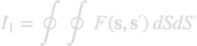
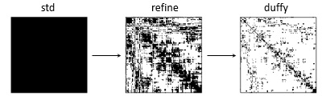

Quadrature engine
Consider the double integral

In the numerical evaluation of such integrals one often faces the problem that for boundary pairs located sufficiently close to each other the integration should be performed more accurately than for pairs of boundary elements located further apart. In the nanobem toolbox we introduce in such cases a "quadrature engine" with different integrators

The std integrator performs a fast but not overly accurate integration over all boundary pairs, and the ensuing integrators (here refine and duffy) perform the refined integrations and overwrite the results of the previous integrations. This approach is applied for the calculation of
- the single and double layer potentials for the solution of the full Maxwell equations,
- the Green functions of the quasistatic BEM approach,
- the calculation of fields and potentials between observation points located away from the nanoparticle boundary.
Contents
Initialization
In the following we discuss the initialization of the integration engine at the example of the single and double layer potentials of the BEM approach, see galerkin.pot1.engine
% default integrator rules = quadboundary( 'quad3', triquad( 1 ) ); pot( 1 ) = galerkin.pot1.std( 'rules', rules ); % refined integrators rules1 = quadboundary( 'quad3', triquad( 11 ) ); pot( 2 ) = galerkin.pot1.refine2( 'rules1', rules1, 'relcutoff', 2 ); pot( 3 ) = galerkin.pot1.duffy2( 'nduffy', 4 );
After this first initialization the quadrature rules are stored in the pot array. The standard integrator will be later used for all boundary pairs, the refine integrator for boundary elememts closer than relcutoff (see bdist2), and the Duffy integrator for identical or touching boundary elements.
In a second step the integration engine is applied to a pair of boundary elements
% initialize potential integrator for boundary elements TAU1, TAU2
pot = set( pot, tau1, tau2 )
1�5 heterogeneous base (std, refine2, duffy2) array with properties:
parent
The potential integrators can now be used for the evaluation of the single and double layer potentials, or for the evaluation of potentials and fields.
Evaluation
For the evaluation of the inegration engine one first has to split them into bunches each starting with a std (parent) integrator
% split array at PARENT positions into cell array
pot = mat2cell( pot );
After that the different integrators can be evaluated successively
% loop over integration engines each starting with a STD integrator for it = 1 : numel( pot ) % evaluate STD integrator for given wavenumber K0 pot1 = pot{ it }; data = eval2( pot1( 1 ), k0 ); % refinement integrators, overwrite previous results for i1 = 2 : numel( pot1 ) data = eval2( pot1( i1 ), k0, data ); end % process final result ... end
Copyright 2022 Ulrich Hohenester